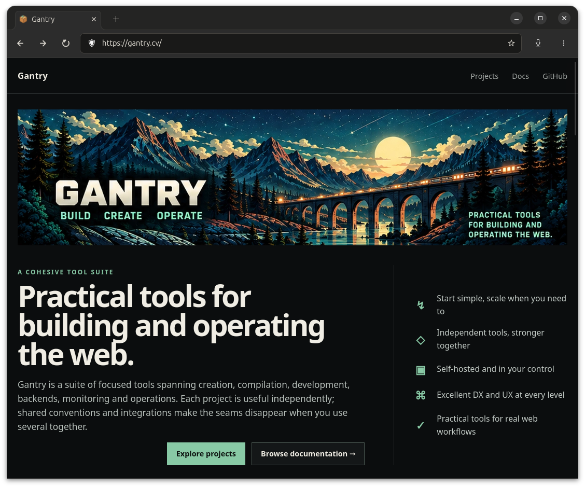

Not Chromium
Vantage contains no Chromium or Blink code. WebKitGTK renders pages inside a browser interface Vantage owns.
Native Linux browser · WebKitGTK
Vantage is a minimalist, keyboard-first browser with familiar controls, local browser data and no telemetry or account requirement.

A focused browser shell
Vantage contains no Chromium or Blink code. WebKitGTK renders pages inside a browser interface Vantage owns.
No telemetry, browser account or cloud dependency. History, bookmarks and settings remain on your machine.
Native GTK controls, Wayland behavior, desktop integration and an Omarchy-first testing target.
Small browser, useful essentials